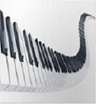

NORD
PARAMETERS
Nord Sample Editor 4 The new Nord Sample Editor 4 makes it easier than ever to create custom sampled instruments for your Nord keyboard. Record or drag and drop audio-files and enjoy automatic mapping with pitch detection, simple looping and instant transfer to your Nord instrument. The new version 4 allows recording directly in the app and along with smart auto-mapping for a quick and intuitive workflow!